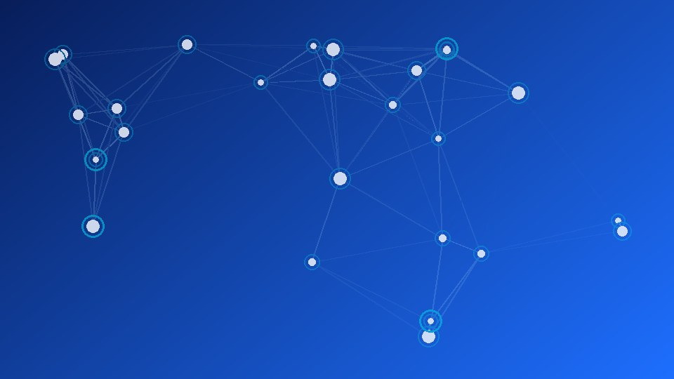

Cómo digitalizar tu negocio en Chile sin morir en el intento: guía paso a paso para pymes
Digitalizar tu empresa no significa gastar una fortuna. Descubre las herramientas, estrategias y pasos concretos para llevar tu negocio al mundo digital de manera efectiva y rentable.

Digitalizar una pyme suena a un proyecto caro y complejo, reservado para empresas con equipos de TI y presupuestos grandes. La realidad es distinta: hoy existen herramientas accesibles que permiten a cualquier negocio chileno —desde un taller mecánico hasta una tienda de repostería— dar el salto digital en semanas, no en años, y con una inversión que se recupera rápido.
1. Empieza por diagnosticar, no por comprar software
El error más común es partir comprando un sistema porque "lo usa la competencia". Antes de invertir, identifica en qué parte del negocio pierdes más tiempo o dinero: ¿control de inventario en papel? ¿agenda de clientes en un cuaderno? ¿ventas que solo ocurren en el local físico? Ese diagnóstico define qué digitalizar primero.
2. Prioriza tu presencia en línea
Un sitio web propio —no solo redes sociales— te da control total sobre tu marca, mejora tu credibilidad frente a clientes y bancos, y te permite aparecer en Google cuando alguien busca lo que vendes. A diferencia de una cuenta de Instagram, un sitio web no depende de algoritmos ni puede ser suspendido de un día para otro.
3. Automatiza procesos repetitivos
- Ventas: un catálogo online o botón de WhatsApp reduce el tiempo de respuesta y evita perder clientes por demora.
- Administración: boletas electrónicas, control de stock y agendamiento online eliminan horas de trabajo manual cada semana.
- Comunicación: respuestas automáticas y flujos de seguimiento mantienen a tus clientes informados sin que tengas que estar pendiente todo el día.
4. Mide antes de escalar
No necesitas digitalizarlo todo de una vez. Implementa una mejora, mide su impacto durante 4 a 6 semanas y luego decide el siguiente paso. Este enfoque incremental reduce el riesgo financiero y te permite aprender qué canales realmente traen clientes a tu negocio.
5. Busca financiamiento antes de pagar todo de tu bolsillo
En Chile existen fondos públicos como CORFO y FOSIS pensados exactamente para financiar la digitalización de pymes. Antes de asumir el costo completo, revisa si tu proyecto califica para un subsidio —puede cubrir gran parte de la inversión inicial.
En GestixPro acompañamos a emprendedores chilenos en cada una de estas etapas: desde el diagnóstico inicial hasta el desarrollo del sitio web, la automatización de procesos y la postulación a fondos de financiamiento.